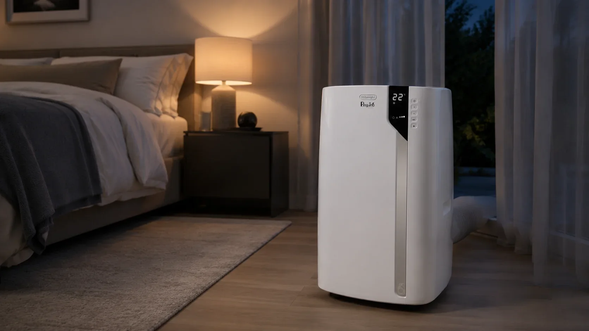
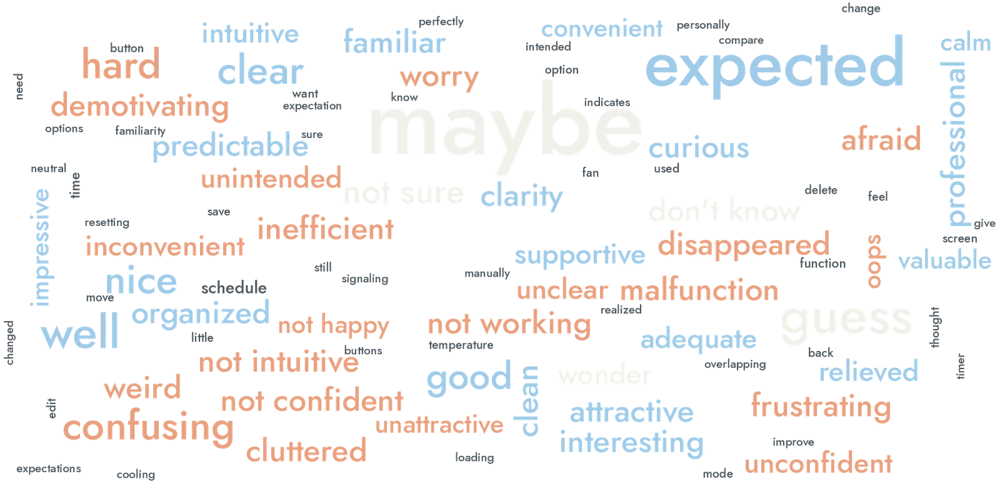
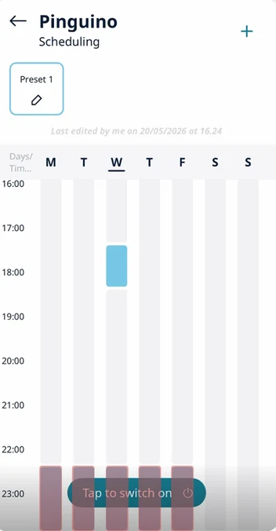
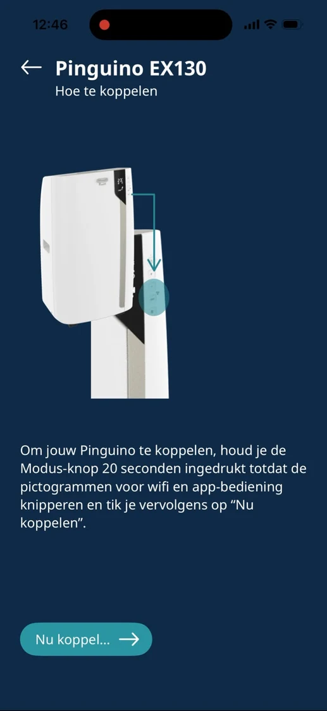
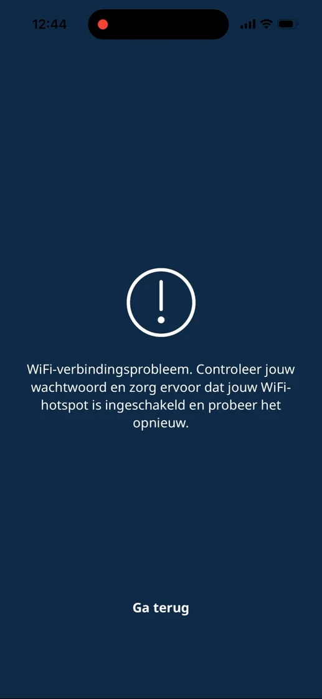

Cool,not clear.
Usability research for De'Longhi on the Pinguino Care4Me portable air conditioner and its Comfort app, focused on weekly scheduling and remote control. People could cool a room easily. Changing a schedule was where the app lost them, and our recommendations went to De'Longhi's design centre in Italy.
- My role
- UX researcher: research design, facilitation, UEQ analysis, design recommendations
- Client
- De'Longhi, via TU Delft
- Team
- With Daan Robben, Emma van Heek, Paweł Wykowski and Arda Yener
- Product
- Pinguino Care4Me PAC EX130 + De'Longhi Comfort app

Summary
Assess the Comfort app's usability, especially weekly scheduling and remote control.
7 participants in two experience groups: 6 think-aloud tasks, the UEQ and an interview.
Basic control worked. Editing a schedule dropped to 57% completion, and 0% for experienced users.
Functional but under-polished. Six recommendations delivered to De'Longhi's design centre in Italy.
What I did
4 contributionsFraming the experience problem
Broke remote control and weekly scheduling down into four experience questions (task success, comprehension cost, operation path and mental model) and pinned down the product decisions the study had to inform.
BriefA mixed-method study from scratch
Designed the pre-test screener, task-based usability test, UEQ and semi-structured interview. Recruited 7 users with different smart-home experience and split them into two groups so their results could be compared.
StudyFacilitating and locating the weak spots
Facilitated four think-aloud sessions, the pilot and three tests, logging completion, errors, detours and misreadings. Graded each issue by severity against task data and the UEQ benchmark, and turned them into a priority list.
Friction pointsFrom findings to redesign
Mapped qualitative feedback and numbers onto specific interaction points, and wrote the redesign recommendations for the scheduling and remote-control flows, delivered to De'Longhi's design centre in Italy.
Recommendations
Task-based usability testingThink-aloudUEQSemi-structured interviewsThematic analysisIn-vivo codingFriction mappingSeverity gradingExcel
Product decisions & metrics
Baseline from our study- Decision 01Scope the study to scheduling, not setup.
It was the feature De’Longhi cared about most, and pre-pairing kept every session focused on it. Trade-off: it likely underestimates the setup burden.
- Decision 02Compare people with and without smart-home experience.
The Pinguino is often bought on impulse, so both groups need value right away. Trade-off: a small sample per group, read descriptively.
- Decision 03Order the recommendations by severity.
The edit bug blocks a core task, so it comes before polish. Trade-off: novelty, the weakest UEQ scale, has to wait.
57% today, and 0% for experienced users.
- Time on edit and pause tasks (136 s and 120 s today)
- UEQ perspicuity (+0.43) against the +0.8 baseline
- First-time pairing success, outside our test (it took us three days)
Today’s numbers are the baseline for a retest after the fixes.
Comfort depends on understanding the system.
The Pinguino is often bought on impulse on a hot summer day. Its app promises more than cooling: schedules, rooms and energy-aware modes. That only works if people can use it without a learning curve.
De'Longhi asked for an assessment of the Comfort app's usability and UI, with particular interest in the weekly scheduling and room functions. We scoped the study to climate-control tasks and scheduling.
Before testing anyone, we set the product up ourselves. Pairing took us three days, including a hidden step: hold the mode button for 20 seconds. In the app, the “Tap to switch on” button on the schedule screen didn't say whether it controlled the device or the schedule.


- Our own first try
- The experience starts before the app: setup was the hardest part.
- Advanced features like scheduling looked like the biggest usability risk.
- Comfort depends on how well people understand the system.
- System feedback was often unclear, in the app and on the device.
How do usability factors of the De'Longhi Comfort app influence the user's ability to perform climate-control tasks on the Pinguino Care4Me PAC EX130?
- SQ1
How intuitive is the app for people with no smart-home experience, compared with people who have it?
- SQ2
How usable is weekly scheduling, and what do people run into when creating, changing and managing schedules?
Four experience questions
What the study had to measure- 01Task success
Can people finish remote-control and scheduling tasks on their own?
Weighted completion rate - 02Comprehension cost
How much effort does it take to understand what the app is telling them?
Difficulty · confidence · UEQ perspicuity - 03Operation path
Do they take the expected route, or detour and backtrack?
Task time · path deviations - 04Mental model
Does the app behave the way people expect it to?
Think-aloud · interview · group comparison
Six tasks, building up to changing a schedule.
A summative, mixed-method usability test in the living-room lab at TU Delft IDE. Each session took about an hour, with one facilitator and one note-taker.
Participants used a provided iPhone with the app already paired, so the study could focus on scheduling. After each task they rated difficulty and confidence. At the end they filled in the UEQ on paper and answered ten interview questions.
A screener I designed split participants into people with smart-home experience (3) and people without it (4), so the two groups could be compared on the same tasks.

The six tasks
Same order for everyone- 1Turn on the Pinguino
Cool the room to 22 °C, low fan.
- 2First schedule
Be cool at 24 °C when you get home at 18:00.
- 3Night-time schedule
Quiet fan 22:30–00:00 on weekdays.
- 4Repeating schedule
20 °C before 18:00, Monday to Friday.
- 5Change one day
Tomorrow only, start at 19:00 instead.
- 6Pause for a holiday
Wednesday to Sunday off, keep the rest.
Making a schedule was fine. Changing one wasn't.
Tasks 1–4 were completed almost perfectly. Tasks 5 and 6, editing and pausing a schedule, had the lowest completion, the lowest confidence and the most “harder than expected”.
Completion used a weighted score: 1.00 done independently, 0.75 with a prompt, 0.50 done incorrectly, 0 not done. With seven people, all numbers are read descriptively.
Per task
n = 7Confidence followed the same line: 5.6–6.3 out of 7 for tasks 1–4, then 4.9 for task 6 and 3.6 for task 5.
Experience worked against people
Experienced (3) vs inexperienced (4)Confidence 1.7 / 7. Their habits from other calendar and smart-home apps didn't carry over.
Confidence 5.0 / 7. Without those habits, they explored the app until it worked.
Experienced participants also rated tasks 1, 2, 5 and 6 as harder than expected more often (67%). The interface looks conventional, so they brought conventional expectations, and the app didn't honour them.
Where exactly people got stuck.
We mapped the expected flow of every task, then placed each friction point from the transcripts on it, with the participants affected and what they said.
Most friction clustered on the scheduling screens. One of them turned out to be a bug: editing a schedule bar added a new bar instead of changing the old one.
Each issue was then graded by severity, weighing how much it hurt task success, how many participants it hit, and where the related UEQ scale sat against the benchmark.
Blocks a task or loses data
HighHits several people, or undoes their work
MediumSlows people down, they recover
 Task 1 · P2Medium
Task 1 · P2MediumA big “Off” that isn't the button
The large “Off” label looked like the toggle. The real power button was a smaller, separate element.
The power button is smaller than the first button I was looking at.
 Task 1 · P1, P7Medium
Task 1 · P1, P7MediumA loading bar with no meaning
After changing the temperature, a bar loaded and disappeared. Nobody knew if the action had registered.
I've just slid it and now there's a loading bar. I do not know what that means.
 Task 2 · P1, P2, P3, P6High
Task 2 · P1, P2, P3, P6High“Tap to switch on” switched it off
People pressed it expecting to start scheduling. It turned the air conditioner off instead.
I thought the scheduler is maybe popping up, but the whole thing was shutting down.
 Task 3 · P1High
Task 3 · P1HighA schedule silently replaced
Saving the night-time schedule removed the one from task 2. No warning, no conflict dialogue.
It just disappeared. Maybe it would ask me to remove it.
 Task 4 · P3Medium
Task 4 · P3MediumEnd time doesn't follow start time
Every new schedule needed the end time set by hand, an extra step people didn't expect.
Why doesn't it have any automatically end time?
 Task 5 · P1, P3, P5, P7Critical
Task 5 · P1, P3, P5, P7CriticalThe edit that never saved
Editing a start time and saving left the calendar unchanged. The only way was to delete and recreate. We traced it to a bug.
I thought I've changed the start time, but it has not changed.
 Task 6 · P1, P3, P6, P7High
Task 6 · P1, P3, P6, P7HighNo way to pause several days
People tried to deselect Wednesday to Sunday. Nothing changed. Single-day delete was found by accident.
It's a little bit complicated than adding a schedule.
Usable enough. Not engaging at all.
The UEQ split the experience in two. Task-related qualities came close to the market baseline. How the app felt was flat or negative.
Six scales from −3 to +3. Pragmatic quality averages perspicuity, efficiency and dependability; hedonic quality averages stimulation and novelty. The market baseline sits around +0.8.
Does it get the job done? Close to, but below, the baseline. The core flow works, without fatal obstacles.
Is it pleasant to use? Stimulation near zero, novelty clearly negative.
Six UEQ scales
Mean · n = 7 · dashed line = market baseline +0.8- AttractivenessOverall+0.79
- PerspicuityPragmatic+0.43
- EfficiencyPragmatic+0.75
- DependabilityPragmatic+0.79
- StimulationHedonic+0.14
- NoveltyHedonic−1.04
−30+3
Attractiveness, efficiency and dependability all sat just under the +0.8 baseline. Perspicuity stayed in the neutral zone. Novelty was the only scale in the negative zone: people saw the app as conventional, even a little outdated next to other smart-home apps.
In participants' own ratings
Item-level highlightsStrongest positives
Strongest negatives
It looked familiar, so people expected it to behave that way.
Inductive in-vivo coding of the transcripts gave five themes. Together they explain why the app was usable but cost so much effort.
Visual clarity was mostly tied to the home page. Expectation mismatch was mostly tied to scheduling.
How it felt, in their words
Feeling words from interviews and observation
expected · clear · nice · good · familiar
hard · confusing · not intuitive · afraid
maybe · guess · not sure · don't know
Rebuilt from our team's word cloud: feeling words keep their relative size, while topic words like “schedule”, “time” and “button” are shrunk to grey. Doubt is the loudest signal, with “maybe” the largest feeling word, in line with the feedback-uncertainty theme.
- Theme 1
Visual clarity and understanding
Clear schedule bars, icons and indicators helped people understand and feel confident.
It shows on the calendar that it's quite clear that it only repeats on weekdays.P7
- Theme 2
Discoverability challenges
An overloaded interface and hidden functions made key features hard to find.
Me not being able to figure out the scheduling immediately is annoying… it should be a very basic use case.P2
- Theme 3
Expectation–system mismatch
People expected it to work like other calendar apps, and met limited editing and fixed controls.
I see tap to switch on, so I try. Oh, it's turning off.P6
- Theme 4
System feedback uncertainty
Unclear or missing status left people unsure whether their action had applied.
The bar loaded and disappeared, instead of giving me some feedback.P4
- Theme 5
Perceived value
Willingness to keep using it depended on usefulness, convenience and personal routine.
It's just not that useful, but it's just because my own schedule issues.P3
How the factors add up
Answer to the research question- 1Expectation mismatch
A familiar-looking interface that doesn't behave like one.
- 2Low discoverability
People explore instead of recognising. Time and learning effort go up.
- 3Feedback uncertainty
Unclear confirmation leads to trial and error, and lower trust.
- =Higher cognitive cost
Tasks still get done, but first-time use isn't intuitive.
From trial and error to recognition.
The app is operational but lacks interaction polish. We mapped every issue to the interaction point where it happened, and turned them into recommendations ordered by severity.
They were delivered to De'Longhi's design centre in Italy. Each one links what we saw, with the evidence behind it, to what to change.
Worth keeping: the blue schedule bars were generally well received, and they're a good base to build on.
-
01Critical
Fix the scheduling functions
What we sawEditing a start time added a second block on top of the old one, so the change looked unsaved and people had to delete and recreate. The “Tap to switch on/off” button sits over blocks set around midnight, and the screen can't scroll far enough to reveal them. Several participants didn't realise the blocks could be tapped at all.
What to change- Edit the existing block in place, and show the new time on the calendar straight away.
- Move the on/off control out of the schedule canvas, for example into the header, so late-night blocks stay visible.
- Make blocks look tappable, with an edit handle or a pressed state.
Task 5 · 57% completionExperienced users · 0%4 of 7 hit the bug
Edits didn't apply 
Button over late blocks SchedulingOn ⏻MTWTF✓ Friday updated · 19:00–23:00Direction sketch -
02High
Revise the information architecture
What we sawThe large “Off” on the home card read as the switch. “Tap to switch on” read as the way into scheduling, and turned the unit off. Active/Standby and an unlabelled “+” left people guessing, and the timer looked like the same feature as the schedule.
What to change- Separate status from control on the home card: one clear power toggle, and a label that says what the unit is doing.
- Redesign or remove “Tap to switch on”, and label the “+” as “New schedule”.
- Explain Active and Standby in plain words, clarify favourite mode, and keep the timer apart from weekly schedules.
Task 2 · 4 of 7 tapped itPerspicuity +0.43 · neutralTheme 2 · discoverability
“Off” isn't the switch Control or schedule? -
03High
Confirm every action
What we sawAfter a change, a loading bar appeared and vanished without saying what happened. A newly saved schedule silently replaced an older one. People were often unsure whether their schedule had been saved.
What to change- Replace the anonymous loading bar with a status that completes, such as “Switching on” then “On, cooling to 22 °C”.
- Warn before a new schedule overlaps or replaces an existing one, and let people decide.
- Add short explanations of how the Pinguino behaves, for example that cooling a room takes time.
Theme 4 · feedback uncertaintyDependability +0.79 · below baseline
A bar with no meaning Replaced, no warning This overlaps another scheduleWeekday evening · Mon–Fri · 18:00–23:00
Adjust the existing oneReplace itCancelDirection sketch -
04High
Follow calendar conventions
What we sawThe end time never followed the start time, so every schedule needed it set by hand, and the app answered with “End time must follow start time”. There was no way to pause a schedule, only to delete it, and days had to be removed one at a time.
What to change- Pre-fill the end time from the start time.
- Add a pause for a chosen period that keeps the schedule intact.
- Let people select several days or blocks and delete them in one go.
Task 6 · 71% harder than expectedTask 4 · end-time friction
End time by hand One day at a time Evening cooling18:00 – 21:00 · end time pre-filled
MTWTFSSPauseWed → SunSelect daysDelete 5Direction sketch -
05Medium
Guide first use
What we sawPairing hides behind holding the Mode button for 20 seconds, and a failure returns the same generic Wi-Fi error. We only got the unit connected with help from De'Longhi. Setup was left out of the tests, so this comes from our own attempt.
What to change- A short onboarding that introduces the Pinguino, what the app is for and its key features.
- Pairing steps with visible progress, and errors that say what went wrong and what to try next.
- Point out scheduling and remote control during onboarding, rather than leaving them to exploration.
Setup took us 3 daysNot measured in the test

20-second hold 
Same error every time
06 · Before the redesign, test the mental model
Research follow-up- Map expectations first
Interview people on how they expect scheduling to work, so the redesign leans on patterns they already know.
- Test with the real target group
Adults aged 35–50, at home, on their own phones, including setup and pairing.
- A sample the UEQ can trust
At least 20 participants, with the task order counterbalanced.
Direction sketches are illustrations of the recommendations for this portfolio, not the delivered designs.
Be honest about what your method can show.
The hardest part wasn't running the tests. It was shaping the research question, and being clear about what our data could and couldn't say.
We started with the experienced-vs-inexperienced comparison as the main question. Our tutor pushed us to widen the lens, so it became a sub-question under a broader question about usability factors. That change shaped everything after it, from tasks to recommendations.
Facilitating the pilot, I was so focused on guiding that I missed hesitations and small recoveries I only saw in the recording. It changed how I thought about observation, and showed the value of a note-taker who focuses on non-verbal behaviour.
Reading the results in context
Limitations- Seven students
Below the UEQ's recommended n ≥ 20, and younger and more tech-literate than De'Longhi's 35–50 target group. The results show a trend, read descriptively.
- Setup left out
We pre-paired the device because pairing took us three days. That kept the focus on scheduling, but likely underestimates the real usability burden.
- Lab, one phone, fixed order
A living-room lab, a provided iPhone for everyone and no counterbalancing may have shifted how later tasks felt.
Good research isn't about following the perfect method. It's about being open at every step about what the method can and cannot reveal.